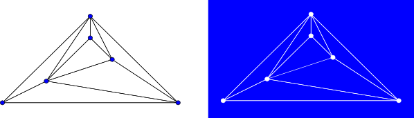

template<typename Graph, typename PlanarEmbedding, typename PlanarFaceVisitor, typename EdgeIndexMap> void planar_face_traversal(const Graph& g, PlanarEmbedding embedding, PlanarFaceVisitor& visitor, EdgeIndexMap em);
A graph is planar if it can be drawn in two-dimensional space with no
two of its edges crossing. Any embedding of a planar graph separates the plane
into distinct regions that are bounded by sequences of edges in the graph.
These regions are called faces.
|  |
In a biconnected graph, like the one shown above, each face is bounded by a cycle and each edge belongs to exactly two faces. For this reason, when planar_face_traversal is called on a biconnected graph, each edge will be visited exactly twice: once on each of two distinct faces, and no vertex will be visited more than once on a particular face. The output of planar_face_traversal on non-biconnected graphs is less intuitive - for example, if the graph consists solely of a path of vertices (and therefore a single face), planar_face_traversal will iterate around the path, visiting each edge twice and visiting some vertices more than once. planar_face_traversal does not visit isolated vertices.
Like other graph traversal algorithms in the Boost Graph Library, the planar
face traversal is a generic traversal that can be customized by the
redefinition of certain visitor event points. By defining an appropriate
visitor, this traversal can be
used to enumerate the faces of a planar graph, triangulate a planar graph, or
even construct a dual of a planar graph.
struct output_visitor: public planar_face_traversal_visitor
{
void begin_face() { std::cout << "New face: "; }
template <typename Vertex> void next_vertex(Vertex v) { std::cout << v << " "; }
void finish_face() { std::cout << std::endl; }
};
can be passed to the planar_face_traversal function:
output_visitor my_visitor;
planar_face_traversal(g, embed, my_visitor); //embed is a planar embedding of g
and might produce the output
New face: 1 2 5 4
New face: 2 3 4 5
New face: 3 0 1 4
New face: 1 0 3 2
planar_face_traversal iterates over a copy of the edges of the input graph, so it is safe to add edges to the graph during visitor event points.
boost/graph/planar_face_traversal.hpp
An undirected graph. The graph type must be a model of VertexAndEdgeListGraphIN: PlanarEmbedding
A model of PlanarEmbedding.IN: PlanarFaceVisitor
A model of PlanarFaceVisitor.IN: EdgeIndexMap vm
A Readable Property Map that maps edges from g to distinct integers in the range [0, num_edges(g) )
Default: get(edge_index,g)
examples/planar_face_traversal.cpp